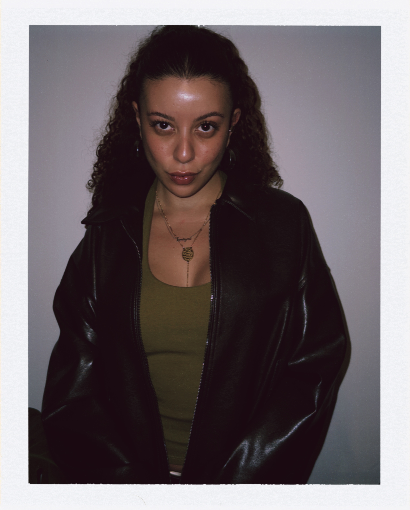

DJ · MC · PESQUISA · ESTRATÉGIA
bom dia,
correria.
tamires youssef, 94, pesquiso a cultura árabe pela música e compartilho essa pesquisa no Mashallah.wav, programa trimestral na @function.fm. No CNPJ, diretora de estratégia na YouDare.
sua libanesa favorita, made in zona leste de são paulo
EM DESTAQUE ✶
MASHALLAH.
WAV pesquisa sonora entre as diásporas árabe e latino-americana ouça os programas no soundcloud
01
INSTAGRAM
siga @mashallah.archives
02
YOUTUBE
arquivo da minha era MC
03
SOUNDCLOUD
sets
04
LINKEDIN
versão corporativa
WAV pesquisa sonora entre as diásporas árabe e latino-americana ouça os programas no soundcloud